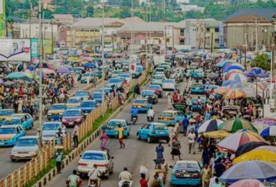
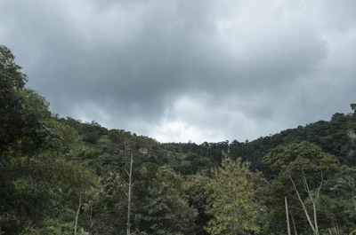
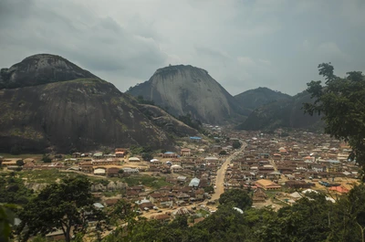
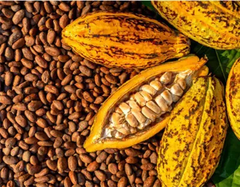
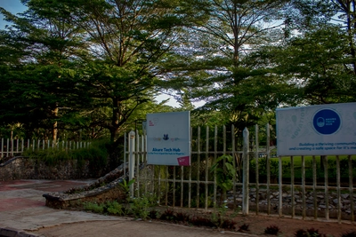

In 1915, the colonial government merged the divisions of Owo, Ondo and Ekiti to form a new province with headquarters in Akure.
In 1976, the town became the capital of Ondo State.
s about 7°25’ north of the equator and 5°19’ east of the Ekitu. It is about 700 km (430 mi) southwest of Abuja and 311 km
(193 mi) north of Lagos State. Residential districts are of varying density, some area such as Arakale, Ayedun Quarters,
Ijoka, and Oja-Oba consist of over 200 inhabitants per hectare (81/acre), while areas such as Ijapo Estate, Alagbaka Estate,
Avenue and Idofin have between 60 and 100 inhabitants per hectare (24 and 40/acre). The town is situated in the tropical
rainforest zone in Nigeria.
Akure is a city in south-western Nigeria. It is the capital and largest city of Ondo State.
The city had a population of 403,000 as at the 2006 population census.

There are two other communities with their separate kings, cultures and traditions beside the Akure kingdom.
The more prominent of the pair is Isinkan, while the second of them is Isolo. The ruler of Isinkan is known as the Iralepo
while that of Isolo is known as the Osolo of Isolo. In the olden days, the three communities (Akure, Isinkan and Isolo)
were located some distances apart. The war with the Benin empire in the pre-colonial period necessitated that the three
communities move closer together however, and they have occupied their current positions ever since. Other nearby towns
include Isarun, Ilara, Igbaraoke, Iju, Itaogbolu, Idanre, Owo, Ikere and Ondo.
The Ikogosi Warm Springs is a tourist attraction located at Ikogosi, a town in Ekiti State, southwestern Nigeria.
Flowing abreast the warm spring is another cold spring which meets the warm spring at a confluence,
each maintaining its thermal properties. These attributes make the spring a tourist attraction in Nigeria.
Research suggested that the warm spring has a temperature of about 70°C at the source and 37°C at the confluence.


The Idanre hill is well-known for its landscape. Its wide variety on cultural sites as 'Owa's Palace', shrines,
The Old Court, Belfry, Agbooogun footprint, thunder water (Omi Apaara) and burial grounds have since brought the location
fame and the nation's nomination for the UNESCO World Heritage Site shortlist. It resides 3000 ft (914.4meters) above sea
level and houses a unique ecosystem upon which the cultural landscape has Integrated. It also has diverse and variegated
eco-systems of flora and fauna. Oke Idanre contains very important bio-physical and land form features whose interaction
with the physical features created an enduring cultural landscape within the setting
Akure is the trade center for a farming region where cocoa, yam, cassava, maize and tobacco are grown.
Cotton is also grown and used to weave cloth. Grains like rice, beans, and millet are very common as they are the major
sources of carbohydrate. It has a vibrant agricultural community who organise an annual trade fair under the aegis of the
Ondo State Agricultural Commodities Association


The city has tertiary institutions which include: the Federal University of Technology Akure,
Federal College of Agriculture, School of Nursing and Midwifery, and School of Health Technology.
It also has famous secondary schools like St. Thomas Aquinas College, Oyemekun Grammar School,
St. Louis Grammar School, and Fiwasaye Girls' Grammar School. The first two are for boys while the latter two are for
girls in the tradition of early schools in school feca. The town also hosts to Federal Government Girls' College and St.
Peter's Unity Secondary School, amongst many others. Primary schools are widespread but most of them often lack quality,
there are few that offer quality education but are accessible to few elites.